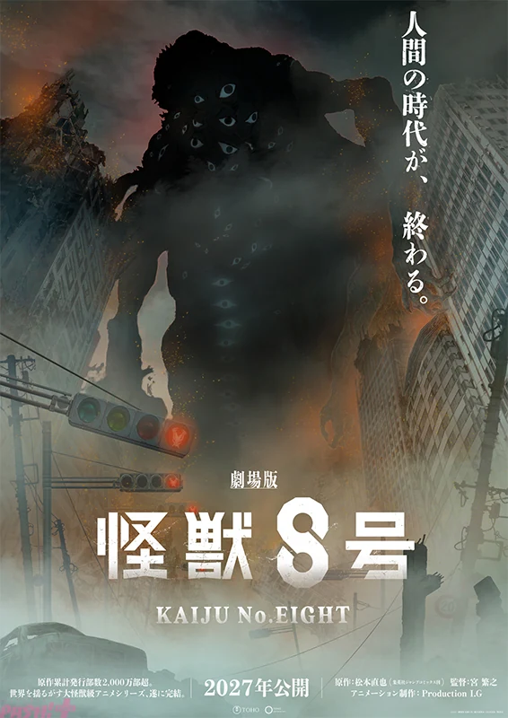

OLD MAN OTAKU / ANIME FILM
Kaiju No. 8 Is Taking Its Anime Finale to Theaters in 2027
The conclusion will be a theatrical film. The format is confirmed; a precise Japanese opening date and international rollout remain unannounced.

Kaiju No. 8 is heading to the big screen for its final mission.
The anime’s previously announced conclusion will take the form of a theatrical film, with a Japanese release planned for 2027. The news was revealed at the franchise’s October 24 event in Tachikawa, alongside a new teaser visual.
Production I.G is returning, with Shigeyuki Miya directing, according to announcement coverage. Art director Shinji Kimura created the teaser illustration, which places a huge unidentified creature above a devastated landscape.
A specific opening date and an international theatrical schedule have not been announced. Fans outside Japan should keep that distinction in mind: “2027 in Japan” is not yet a worldwide release date.
A movie changes how the ending reaches viewers
RogueVerse analysis: A theatrical conclusion gives the series a different viewing experience. Major confrontations can play out in one sitting, with a theater’s sound and scale doing their part. There is something appealing about a room full of fans reacting to the same moment together.
But the format also raises a straightforward storytelling question: how much room will the ending have to breathe?
A film needs its own rhythm. It must build tension, land character decisions, and deliver a satisfying finish within a fixed running time. A larger screen can make a battle look bigger; it cannot supply missing emotional setup.
We do not yet have enough information to judge those choices. The announcement does not establish a runtime or a scene-by-scene adaptation plan. Predicting exactly what will be condensed or omitted would be speculation.
What fans should watch for next
The next useful updates are the release date, fuller story information, a substantial trailer, and distribution plans outside Japan. Those will tell viewers much more than treating the film announcement as proof of either an upgrade or a rushed ending.
For now, the confirmed news is strong enough on its own: Kafka’s anime story is moving toward a theatrical conclusion. The movie has a big job ahead. The monster on the teaser already seems aware of that.
Copyright & image ownership
©2027「劇場版 怪獣8号」製作委員会 ©松本直也/集英社. Visual via PASH! PLUS.
Third-party characters, artwork, titles, logos and trademarks belong to their respective rights holders. Images accompany editorial reporting and commentary; RogueVerse Studio claims no ownership of third-party IP and is not affiliated with or endorsed by its rights holders.
Article text and RogueVerse branding © 2026 RogueVerse Studio. All rights reserved.